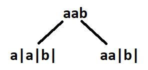
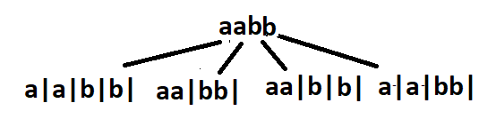

Problem Statement: You are given a string s, partition it in such a way that every substring is a palindrome. Return all such palindromic partitions of s.
Note: A palindrome string is a string that reads the same backward as forward.
Examples:
Example 1: Input: s = “aab” Output: [ ["a","a","b"], ["aa","b"] ] Explanation: The first answer is generated by making three partitions. The second answer is generated by making two partitions. 
Example 2: Input: s = “aabb” Output: [ [“a”,”a”,”b”,”b”], [“aa”,”bb”], [“a”,”a”,”bb”], [“aa”,”b”,”b”] ] Explanation: See Figure 
Solution
Disclaimer: Don't jump directly to the solution, try it out yourself
Approach: The initial idea will be to make partitions to generate substring and check if the substring generated out of the partition will be a palindrome. Partitioning means we would end up generating every substring and checking for palindrome at every step. Since this is a repetitive task being done again and again, at this point we should think of recursion. The recursion continues until the entire string is exhausted. After partitioning, every palindromic substring is inserted in a data structure When the base case has reached the list of palindromes generated during that recursion call is inserted in a vector of vectors/list of list.
We have already discussed the initial thought process and the basic outline of the solution. The approach will get clearer with an example.
Say s = “aabb” and assume indexes of string characters to be 0-based. For a better understanding, we have divided recursion into some steps.
STEP 1: We consider substrings starting from the 0th index.[0,0] is a palindrome, so partition right after the 0th index.[0,1] is another palindrome, make a partition after 1st index. Beyond this point, other substrings starting from index 0 are “aab” and “aabb”. These are not palindromes, hence no more. partitions are possible. The strings remaining on the right side of the partition are used as input to make recursive calls.
STEP 2: Consider the recursive call on the left(refer to image) where “abb” is the input.[1,1] is a palindrome, make a partition after it.[1,2] and [1,3] are not palindromes.
STEP 3: Here “bb” is the input.[2,2] as well as [2,3] are palindromes. Make one partition after the 2nd index and one after the 3rd index The entire string is exhausted after the 3rd index, so the right recursion ends here. Palindromes generated from the right recursion are inserted in our answer.
Our answer at this point :[ [“a”,” a”,” bb”] ]
The left recursion will continue with "b" as its input.[3,3] is a palindrome so one last partition for the left recursion is made after the 3rd index. Insert the palindromes.
ans = [ [“a”,”a”,”bb”], [ “a”,”a”,”b”,”b”] ]
STEP 4: After the list of palindromic substrings are returned from the left recursive call, continue the same process for the call on the right that was left to recur. The right recursion is having “bb” as input, something we have already encountered in step 3. Hence we will repeat the same task which was done in step 3 onwards.
Final answer : [ [“a”,”a”,”bb”], [ “a”,”a”,”b”,”b”] ,[“aa”,”b”,”b”], [“aa”,”bb”] ]
Code:
#include <bits/stdc++.h>
using namespace std;
class Solution {
public:
vector < vector < string >> partition(string s) {
vector < vector < string > > res;
vector < string > path;
partitionHelper(0, s, path, res);
return res;
}
void partitionHelper(int index, string s, vector < string > & path,
vector < vector < string > > & res) {
if (index == s.size()) {
res.push_back(path);
return;
}
for (int i = index; i < s.size(); ++i) {
if (isPalindrome(s, index, i)) {
path.push_back(s.substr(index, i - index + 1));
partitionHelper(i + 1, s, path, res);
path.pop_back();
}
}
}
bool isPalindrome(string s, int start, int end) {
while (start <= end) {
if (s[start++] != s[end--])
return false;
}
return true;
}
};
int main() {
string s = "aabb";
Solution obj;
vector < vector < string >> ans = obj.partition(s);
int n = ans.size();
cout << "The Palindromic partitions are :-" << endl;
cout << " [ ";
for (auto i: ans) {
cout << "[ ";
for (auto j: i) {
cout << j << " ";
}
cout << "] ";
}
cout << "]";
return 0;
}Output:
The Palindromic partitions are :-
[ [ a a b b ] [ a a bb ] [ aa b b ] [ aa bb ] ]
Time Complexity: O( (2^n) *k*(n/2) )
Reason: O(2^n) to generate every substring and O(n/2) to check if the substring generated is a palindrome. O(k) is for inserting the palindromes in another data structure, where k is the average length of the palindrome list.
Space Complexity: O(k * x)
Reason: The space complexity can vary depending upon the length of the answer. k is the average length of the list of palindromes and if we have x such list of palindromes in our final answer. The depth of the recursion tree is n, so the auxiliary space required is equal to the O(n).
import java.util.*;
class TUF {
public static List < List < String >> partition(String s) {
List < List < String >> res = new ArrayList < > ();
List < String > path = new ArrayList < > ();
partitionHelper(0, s, path, res);
return res;
}
static void partitionHelper(int index, String s, List < String > path, List < List < String >> res) {
if (index == s.length()) {
res.add(new ArrayList < > (path));
return;
}
for (int i = index; i < s.length(); ++i) {
if (isPalindrome(s, index, i)) {
path.add(s.substring(index, i + 1));
partitionHelper(i + 1, s, path, res);
path.remove(path.size() - 1);
}
}
}
static boolean isPalindrome(String s, int start, int end) {
while (start <= end) {
if (s.charAt(start++) != s.charAt(end--))
return false;
}
return true;
}
public static void main(String args[]) {
String s = "aabb";
List < List < String >> ans = partition(s);
int n = ans.size();
System.out.println("The Palindromic partitions are :-");
System.out.print(" [ ");
for (int i = 0; i < ans.size(); i++) {
System.out.print("[ ");
for (int j = 0; j < ans.get(i).size(); j++) {
System.out.print(ans.get(i).get(j) + " ");
}
System.out.print("] ");
}
System.out.print("]");
}
}Output:
The Palindromic partitions are :-
[ [ a a b b ] [ a a bb ] [ aa b b ] [ aa bb ] ]
Time Complexity: O( (2^n) *k*(n/2) )
Reason: O(2^n) to generate every substring and O(n/2) to check if the substring generated is a palindrome. O(k) is for inserting the palindromes in another data structure, where k is the average length of the palindrome list.
Space Complexity: O(k * x)
Reason: The space complexity can vary depending upon the length of the answer. k is the average length of the list of palindromes and if we have x such list of palindromes in our final answer. The depth of the recursion tree is n, so the auxiliary space required is equal to the O(n).
from typing import List
class Solution:
def partition(self, s: str) -> List[List[str]]:
res = []
path = []
def partitionHelper(index: int):
if index == len(s):
res.append(path[:])
return
for i in range(index, len(s)):
if isPalindrome(s, index, i):
path.append(s[index:i + 1])
partitionHelper(i + 1)
path.pop()
def isPalindrome(s: str, start: int, end: int) -> bool:
while start <= end:
if s[start] != s[end]:
return False
start += 1
end -= 1
return True
partitionHelper(0)
return res
if __name__ == "__main__":
s = "aabb"
obj = Solution()
ans = obj.partition(s)
print("The Palindromic partitions are :-")
print(" [ ", end="")
for i in ans:
print("[ ", end="")
for j in i:
print(j, end=" ")
print("] ", end="")
print("]")Output:
The Palindromic partitions are :-
[ [ a a b b ] [ a a bb ] [ aa b b ] [ aa bb ] ]
Time Complexity: O( (2^n) *k*(n/2) )
Reason: O(2^n) to generate every substring and O(n/2) to check if the substring generated is a palindrome. O(k) is for inserting the palindromes in another data structure, where k is the average length of the palindrome list.
Space Complexity: O(k * x)
Reason: The space complexity can vary depending on the length of the answer. k is the average length of the list of palindromes and if we have x such list of palindromes in our final answer. The depth of the recursion tree is n, so the auxiliary space required is equal to the O(n).
Special thanks to Somparna Chakrabarti and Sudip Ghosh for contributing to this article on takeUforward. If you also wish to share your knowledge with the takeUforward fam, please check out this article